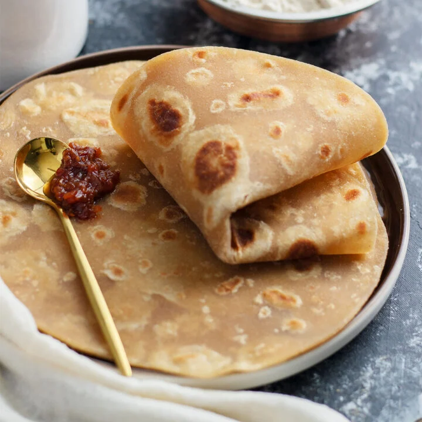

Home
Chapati

Soft, flaky chapatis made from basic ingredients, cooked to golden perfection.
ingredients
- Wheat Flour
- Warm Water
- Salt
- Sugar
- Cooking Oil
- Carrots
Steps
- In a bowl, mix wheat flour, salt, sugar, and grated carrots
- Add warm water gradually and knead into a soft dough.
- Add a little cooking oil and knead again until smooth.
- Cover the dough and let it rest for 10–15 minutes.
- Divide the dough into small balls.
- Roll each ball into a thin circle
- Roll each ball into a thin circle.
- Heat a pan and cook each chapati until golden on both sides.
- Brush lightly with oil and serve hot.
Serve hot with beef stew or chicken.